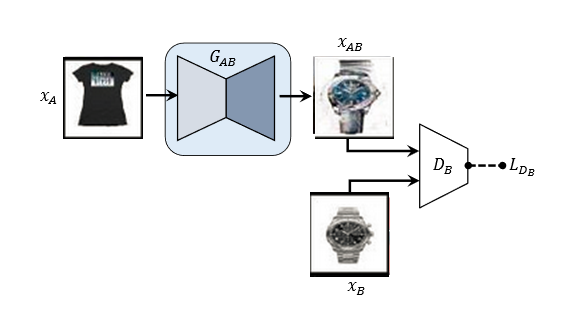
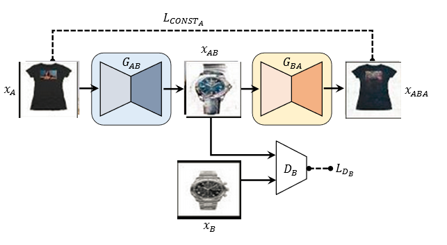
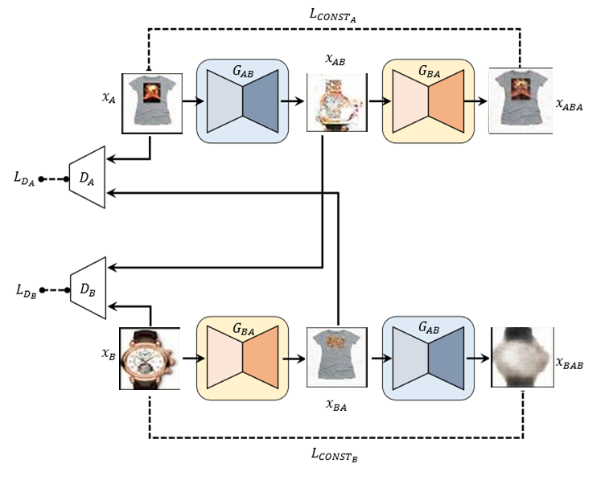

Methodology
The standard GAN (Goodfellow et al, 2014) is explained in the RELATED WORK section. As explained in detail there, the standard GAN takes in gaussian noise as an input and generates an image(or sample) in the distribution (or domain) defined in the application.
Our application is different in three ways.
One, we need as input not a gaussian noise, but an image from the source domain (that will henceforth be referred to as domain A). The goal is to generate an image in the target domain( that will henceforth be referred to as domain B).
Second, we aim to learn the relation between domain A to domain B and also domain B to domain A.
Third, we aim to learn the two above relations without having paired data for our training. i.e., in our training data, we have a set of images from domain A and a set of images from domain B. But we do not have paired 'domain A to domain B' images. The relation is learned in an unsupervised manner.
The modifications made to the standard GAN to achieve each of these goals is explained in the subsection below.
GAN with image input
The standard GAN architecture with image input is shown in the figure below.
GAB is the generator that maps from domain A to domain B. The design of the generator is as follows.
- The input image size is 64x64x3
- The generator uses an encoder-decoder pair
- The encoder has 4 convolutional layers with 4x4 filters, each followed by LeakyReLU layers
- The decoder has 4 deconvolutional layers, each followed by a ReLU
DB is the discriminator that is trained to distinguish between real and fake images in domain B. The design of the discriminator is same as that of the encoder of the generator, with two additional units. One, an additional convolutional layer. Two, a final sigmoid layer that predicts 0/1.
LDB is the standard GAN discriminator loss.
Standard GAN with reconstruction loss
The architecture described in the above section only learns the mapping from A to B and not from B to A. To do this, one more generator (GBA) is added as shown in the diagram above.
The reconstruction loss LCONSTA minimizes the MSE distance between the input image (XA) and the reconstructed image (XABA). The generator GAb is trained for a net loss which is the sum of the standard GAN generator loss (LGANB) and the reconstruction loss (LCONSTA).
LGAB = LGANB + LCONSTA
Discovery GAN
Discovery GAN is architecture used in this work, described in this paper.
The Discovery GAN architecture couples the previously described model. The goal is to learn a bijective (one-to-one) mapping from domain A to domain B, without using any paired data for training. The two coupled models are trained together simultaneously. With this architecture, we have two reconstruction losses (A-B and B-A) and two discriminator losses. The net generator and discriminator losses are as below.
LG = LGAB + LGBA = LGANB + LCONSTA + LGANA + LCONSTB
LD = LDA + LDB
As stated before, the goal is to learn the relation functions GAB and GBA. As stated in the paper, this relation is constrained to be bijective, i.e., GAB is the index of GBA and vice versa. As claimed in the paper, since the model is constrained by two LGAN losses and two LCONST losses, therefore a bijective mapping is achieved.